Initiatives tab: research round A, before any change
agent-worktree-gui 1.155.1, branch wtgui/research-round-a-for-initiatives-tab-e85acb, cut from origin/main at ac327faf, 2026-11-22. Every number and every picture below was read from a headless Chromium against a private fixture panel, not from the stylesheet and not from the reader's live panel on 7331.
The tab is not broken. It is information-inverted: at rest it spends its pixels on prose, and it hides the one thing the tab exists to answer - which piece of work is moving, where it has got to, and what is in the way - three hundred pixels down inside a card. All 104 fields, chips, counts, links, controls and empty states are present today, and this report lists every one of them so the redesign can be checked against a list instead of against memory. Three directions follow, each with a static sketch, its files and its trade-off.
What is wrong, in one sentence: five levels of nested boxes at one border weight, 29 chips and 42 bordered elements in a single open card, and a 204px preamble of self-explanation before the first initiative, so status, identity, gate result and task all look the same and sequence has to be read as text.
104fields, chips, counts, links, controls and states in the inventory, each with a capture or a stated reason
42bordered descendants and 29 chips in the open Menu SSO card
2,845pxof pane scroll for four initiatives at the 480px dock
0product files changed in this round; the only writes are this report and the captures
How this was proved
Where the tab lives
The 104-item inventory
The tab now, at three widths
Three independent readings
A: The Register
B: The Route
C: The Cockpit
How they compare
Recommendation
Appendix
How this was proved
The panel was booted from server.js on a free loopback port with WAG_HOME pointed at a scratch directory, $WAG_SCRATCH/home-main. PANEL_CONFIG was not set, so the instance could not fall back to the reader's ~/.wag; nothing under the live panel's state was read or written. The fixture is the repository's own tools/initiatives-fixture.mjs: four initiatives over three projects and eight worktrees, including one worktree whose path is missing. Waves were seeded into the fixture's own state/waves.json, because routes/waves.js is read-only in this slice and has no writer to call. Tasks were pointed at those waves through the queue's own waveId, which is the only link between a task and a wave.
The captures are real renders of GET /api/initiatives and GET /api/waves through the real scan and the real queue read. They are not mock-ups and they are not injected DOM. The harness is about 150 lines of Playwright that imports tools/browser.mjs; it lives in the scratch directory, not in the repository, because this round is allowed to write only the report and docs/assets/initiatives-redesign/a/.
The live listener was never touched.
The sandbox ports were 59521, 59981, 65112 and others; none is 7331. No product file, route, store or settings value in the live panel was written.
TCP 0.0.0.0:7331 LISTENINGGET /api/health 200 before and after each run.The sandbox ports were 59521, 59981, 65112 and others; none is 7331. No product file, route, store or settings value in the live panel was written.
The exact capture command and viewports
# from the run's scratch directory node capture-main.mjs node capture-crops.mjs node capture-loading.mjs
1440x900 for the realistic default, 1440x3000, 1024x3000 and 768x3000 for the tall open-card evidence, 1024x900 and 768x900 for the same list at a real window height, and 1440x1600 in the wide floating panel. The tall viewport is only a way to fit the whole card in one PNG; the width is the width named. The tab was opened by pressing #btn-assistant, then #as-tabs [data-as-tab="initiatives"], and the harness waited for at least four .init-card elements before every shot.
Where the tab is drawn today, and whether extracting it is the first move
The brief says to start from public/app.js (20,238 lines) and public/core/initiative-fold.js (264 lines). public/app.js does not draw this tab. It is the board: rows, columns, filters, the pipeline chart, settings. Its only initiative surfaces are the permission and tier code at public/app.js:5781-5823 (a move versus a remote write), :6302-6320 (the panel resumes its own move) and :18978-19033 (the settings block that posts the tier). None of them renders a card.
The tab is drawn in public/assistant.js, which is 7,539 lines. The block that owns it runs from about line 3365 to 4360, so roughly 995 lines, not twenty thousand. The pure rules it already shares are public/core/initiative-fold.js (264 lines: the press rule, the word-safe cut, the count chips, the task window and the history sentence) and public/core/waves-lane.js (211 lines: the wave row, gates, lanes, members and the store states). The task cards come from public/queue-cards.js in its compact read-only mode. The CSS is one block at public/style.css:4834-5007. The read is routes/initiatives.js:80-240, and the wave rules are lib/waves.js.
| Surface | File and lines | What it owns |
|---|---|---|
| Tab button | public/index.html:1126 | The word "Initiatives" in the float's tab strip. No count badge. |
| Pane host | public/index.html:1159 | section#as-initiatives, the only scroller. |
| Renderer | public/assistant.js:3973 | Header, store line, tier, forms, empty and loading states, card list, 4s re-read. |
| Card | public/assistant.js:3785 | Title, description fold, counts, edit form, waves, projects, assistants, history. |
| Tree and assistant rows | public/assistant.js:3492, 3527 | Links, branches, Remove, four counts, task fold. |
| Pure press and cut | public/core/initiative-fold.js | The four-answer press rule, word-safe cut, count chips, task order and window, history line. |
| Wave lane markup | public/core/waves-lane.js | Wave row, position, state, gates, auto, template, lanes, members, store states. |
| Task card | public/queue-cards.js:684-800 | Compact read-only card, reused from the queue. Not a second renderer. |
| CSS | public/style.css:4834-5007 | 163 lines of .init-* and .wave-*, including the 1000px two-column container. |
| Read route | routes/initiatives.js:80-240 | Store, trees, assistants, counts, waves, tier and caps in one payload. |
| Wave rules | lib/waves.js | Gate readers, derived state, auto-open, lanes, current wave. |
Is extraction the right first move? No. The first move is the cheapest change that tests the actual hypothesis - that the problem is chrome, not type - and that is a CSS-only de-pill inside
#as-initiatives: make the state, gate, count and member pills borderless text tokens, keep one card edge and every control's border, touch no markup and no handler. The engineering reading above argues this explicitly, and it is right: initCardHtml is a 127-line template wrapped in about twenty wiring hooks, so moving it first adds a load-order contract and a third render path before anyone has proved the visual direction. If the directions below outgrow assistant.js, extract the whole 995-line block (not just the card) into public/initiatives.js as a separate no-op commit, with the same markup, and gate it on a byte-identical fixture capture. Do not mix the move with the redesign.Two facts make the later extraction cheap if it is wanted: the pure rules are already out, and the block is contiguous. Two facts make it expensive: the block calls about twenty pane functions (as$, state, apiFetch, esc, relTime, setView, showBanner, hotOpenPath, rowNode, pulseRow, the queue card painter), and it shares module state with the float's repaint. A moved module would need that context passed in, which is a real interface, not a file move.
The inventory: 104 things the tab draws today, each one a line the redesign must answer for
The list is grouped by the surface it belongs to. Every row names the code that draws it and the capture that shows it. Behavior rows cite the state after the press, because a click is proved by what it changes, not by a screenshot of a cursor. Two rows are marked state not in fixture: the code draws them, but this fixture cannot reach them without inventing a broken record, and inventing one would have made the rest of the captures unrepresentative. Everything else has a real picture.
Counts by group: Shell 17, Card 14, Waves 23, Worktrees 11, Assistants 12, History 5, Order 7, Interaction 15. Total 104.
The inventory: 104 things the tab draws today, each one a line the redesign must answer for
The list is grouped by the surface it belongs to. Every row names the code that draws it and the capture that shows it. Behavior rows cite the state after the press, because a click is proved by what it changes, not by a screenshot of a cursor. Two rows are marked state not in fixture: the code draws them, but this fixture cannot reach them without inventing a broken record, and inventing one would have made the rest of the captures unrepresentative. Everything else has a real picture.
Counts by group: Shell 17, Card 14, Waves 23, Worktrees 11, Assistants 12, History 5, Order 7, Interaction 15. Total 104.
| # | What is drawn | Where | Capture |
|---|---|---|---|
| Shell | |||
| A1 | Initiatives tab button The tab strip's own button, label only, no count badge. Pressing it selects the tab and paints the pane. | public/index.html:1126 | 00-1440-default-page |
| A2 | Pane host section#as-initiatives inside the assistant float. The pane is the scroller; the tab strip and topbar are not. | public/index.html:1159 | 00-1440-default-page |
| A3 | Tab activation Tab click routes to renderAssistantInitiatives. No URL or board selection changes. | public/assistant.js:2199 | 00-1440-default-page |
| A4 | Heading and hint Word 'Initiatives' plus 'the big pieces of work, and the worktrees behind each one'. | public/assistant.js:4020 | 20-tab-head |
| A5 | Help paragraph Three lines: you and the assistants edit; the tier decides whether a change asks first; every change records the actor and the time. | public/assistant.js:4021 | 20-tab-head |
| A6 | Store line 'N initiatives in initiatives.json', the full path in the tooltip. found:false says nothing is saved yet; unreadable says the alert instead. | public/assistant.js:3987-3995 | 20-tab-head 46-error-store |
| A7 | Tier line 'Initiative changes: | public/assistant.js:4023 | 20-tab-head |
| A8 | New initiative button Opens the new form and is then hidden while the form is open. Disabled when the store is unreadable. | public/assistant.js:4025 | 20-tab-head 39-new-form |
| A9 | Refresh button Forces a store read. Every write and every answered move also re-reads. | public/assistant.js:4026 | 20-tab-head |
| A10 | Read hint 'reading...' while a read is in flight, 'read failed: | public/assistant.js:4027 | 48-loading |
| A11 | New form: title Label, text input, maxlength caps.title (120), placeholder 'e.g. SSO migration'. | public/assistant.js:3996-4000 | 39-new-form |
| A12 | New form: description Label and a three-row textarea, placeholder 'what this piece of work is, in a line or two'. | public/assistant.js:4001-4002 | 39-new-form |
| A13 | New form: actions Create initiative (primary, disabled when unreadable), Cancel, 'a title is enough; the description can come later'. | public/assistant.js:4003-4006 | 39-new-form |
| A14 | Empty tab h5 'No initiatives yet', a 213-character explanation, and a primary New initiative button. | public/assistant.js:4008-4015 | 45-empty-tab |
| A15 | Cold read 'reading the initiatives...' skeleton only. Neither the tier line nor any button is drawn yet. | public/assistant.js:3984 | 48-loading |
| A16 | Unreadable store Red alert with the store error, 'The file is left exactly as it is: fix or move it, then try again', Try again, and New disabled. | public/assistant.js:3983, 3987 | 46-error-store |
| A17 | Form note line Per-form result or refusal in an as-ask box, good or bad. Cleared when the form is opened or cancelled. | public/assistant.js:3423-3438 | 46-error-store |
| Card | |||
| B1 | Card shell article.init-card, data-init-card, is-titlecard while folded. One card per initiative, in store order. | public/assistant.js:3851 | 01-1440-default-pane |
| B2 | Title press The whole head is one button, with aria-expanded, Enter and Space. Pressing a control inside never folds the card. | public/assistant.js:3854-3857 | 21-card-head |
| B3 | Folded title clamp Two lines with an ellipsis while folded; the open card shows the full title. 13.5px / 600. | public/assistant.js:3855; style.css:4851 | 01-1440-default-pane |
| B4 | Caret A small right or down glyph, aria-hidden. | public/assistant.js:3856 | 21-card-head |
| B5 | Edit Open cards only. Disabled when the tier blocks the write or the card is already in its edit form. | public/assistant.js:3858 | 21-card-head 25-edit-form |
| B6 | Description fold header Caret and the word 'Description', aria-expanded. It folds only the description, never the card. | public/assistant.js:3843-3849 | 23-desc-open 24-desc-refolded |
| B7 | Description, whole pre-wrap, 72ch measure, paragraphs kept, 12px at 18.6px line. | public/assistant.js:3837 | 23-desc-open |
| B8 | Description, cut Two lines then a dots mark. The cut is word-safe and re-measured when the rail width changes. | public/assistant.js:3720-3783 | 22-desc-folded-card |
| B9 | No description Italic 'no description yet - Edit says what this piece of work is'. | public/assistant.js:3839 | 35-empty-card |
| B10 | Count chips N projects, N worktrees, N assistants. All three always drawn, zeros included, singular and plural said in the tooltip. | public/assistant.js:3861-3865 | 21-card-head |
| B11 | Edited line 'edited 6h ago by assistant-1'. The actor is omitted when the reader did it; the line is absent when no updatedAt is held. | public/assistant.js:3866 | 21-card-head |
| B12 | Edit form Title input, description textarea, Save words, Cancel, a hint. A blocked tier draws the refusal instead. | public/assistant.js:3822-3835 | 25-edit-form |
| B13 | Card press rule Four answers: card, description, self, none. It has its own test, so a control added later cannot start folding cards. | public/core/initiative-fold.js:64 | 02-1440-expanded-pane |
| B14 | Card note Write result or refusal under the card, in the same as-ask box as the forms. | public/assistant.js:3908 | 46-error-store |
| Waves | |||
| C1 | Waves section head 'WAVES' plus a count chip. Drawn only when the initiative has waves, refused records, or an unreadable store. | public/core/waves-lane.js:175-193 | 26-wave-flat |
| C2 | No waves at all An initiative with none draws no section and no empty box; the card is what it was. | public/core/waves-lane.js:181 | 36-no-waves-card |
| C3 | Wave store unreadable Red alert naming the store error; the file is left alone. | public/core/waves-lane.js:188-190 | 47-error-waves |
| C4 | No valid waves hint 'no waves recorded on this initiative yet...' Drawn when the store holds a refused record and no valid wave. | public/core/waves-lane.js:190 | 35-empty-card |
| C5 | Refused records One muted line per skipped record: the record id and the loader's own error. | public/core/waves-lane.js:194-199 | 35-empty-card 37-wave-skipped |
| C6 | Wave row data-wave-id, data-wave-state, data-wave-current. One row per wave, position order. | public/core/waves-lane.js:145 | 26-wave-flat |
| C7 | Position W1, W2, W3; W? when the record has no position. The tooltip says 'wave N of this initiative'. | public/core/waves-lane.js:147-149 | 26-wave-flat |
| C8 | Wave title Full title, wraps anywhere, 12.5px / 600. | public/core/waves-lane.js:150 | 26-wave-flat |
| C9 | Wave state chip Eight states: running, blocked, unknown, done, abandoned, ready, unentered, empty. Tones and the derived why in the tooltip. | public/core/waves-lane.js:151 | 26-wave-flat 27-wave-auto-open 28-wave-lanes |
| C10 | Current chip Marks the lowest-position wave the order makes current: running first, then ready, then not entered. | public/core/waves-lane.js:152 | 28-wave-lanes |
| C11 | Template line 'template turnover' plus unresolved (bundle lacks the id), resolved (members inherit it), or unchecked. | public/core/waves-lane.js:155-160 | 28-wave-lanes |
| C12 | Auto chip auto on or auto off. The tooltip is the whole rule: one switch, read on a live read, never in the background. | public/core/waves-lane.js:153-154 | 26-wave-flat 27-wave-auto-open |
| C13 | Opened or waiting chip 'opened by w_callback' when a predecessor's switch opened this wave, or 'auto wait - | public/core/waves-lane.js:138-145 | 27-wave-auto-open |
| C14 | Entry gate 'entry | public/core/waves-lane.js:164 | 26-wave-flat |
| C15 | Exit gate Same words and tones for the exit gate. This is the gate the state derivation reads. | public/core/waves-lane.js:165 | 26-wave-flat |
| C16 | Join line 'N lanes - closing this wave is ONE commit that names them all', only when two or more lanes owe a join. | public/core/waves-lane.js:161 | 28-wave-lanes |
| C17 | Members, flat With zero or one lane, members sit in one wrapped row under the gates. | public/core/waves-lane.js:167-171 | 26-wave-flat |
| C18 | Members, in lanes With two or more lanes, each member is drawn inside its own lane; the grouping is the read. | public/core/waves-lane.js:98-106, 167 | 28-wave-lanes |
| C19 | Lane row Lane name and state chip, then 'runs in N tree(s)' or the reason the lane cannot be pinned. | public/core/waves-lane.js:78-96 | 28-wave-lanes |
| C20 | Member #id, title, project, state word. An abandoned member carries its reason in the tooltip. | public/core/waves-lane.js:60-76 | 26-wave-flat 28-wave-lanes |
| C21 | Lane refused alert Red alert when the lane set cannot be isolated: a member that ran and named no tree. Not reachable in this fixture without such a task. | public/core/waves-lane.js:98-106 | (state not in fixture) |
| C22 | No members 'no task names this wave yet' inside the wave row. | public/core/waves-lane.js:171 | 38-wave-empty |
| C23 | Zero wave count The count chip keeps its place and reads 0 when a refused record is all the store holds. | public/core/waves-lane.js:192 | 35-empty-card |
| Worktrees | |||
| D1 | Projects head The 'PROJECTS' section head. | public/assistant.js:3876 | 29-projects |
| D2 | Project fold Caret, project name in mono, and an 'N trees' chip. aria-expanded; folded until the reader opens it. | public/assistant.js:3806-3810 | 29-projects |
| D3 | Project order Alphabetical by project name; fixed, with no control. | routes/initiatives.js:118-124 | 29-projects |
| D4 | No worktrees 'No worktrees yet' plus a sentence that an add puts the first one here. | public/assistant.js:3812 | 35-empty-card |
| D5 | Tree link The tree's name opens its board row, scrolls it into view and flashes it. The tooltip names that walk. | public/assistant.js:3503-3506 | 30-tree-rows |
| D6 | Missing tree Line-through, dimmed, not a link; the tooltip says the path is not on disk. | public/assistant.js:3504 | 37-wave-skipped |
| D7 | Remove Tooltip names who attached it and when, and says the tier decides whether that asks. Disabled when blocked. | public/assistant.js:3508 | 30-tree-rows 41-hover-remove |
| D8 | Branch chip A link when the host has a branch URL, plain otherwise; a long branch wraps; the why sits in the tooltip. | public/assistant.js:3511-3516 | 30-tree-rows |
| D9 | Add a worktree '+ Add a worktree', disabled when the tier blocks it. | public/assistant.js:3878 | 29-projects |
| D10 | Add form A select grouped by project, already-attached trees omitted, a placeholder when none is free; Attach or Ask to add; Cancel; hint. | public/assistant.js:3694-3702 | 31-add-form |
| D11 | Tree order Path alphabetical inside a project; fixed. | routes/initiatives.js:325 | 30-tree-rows |
| Assistants | |||
| E1 | Assistants fold Caret, the word 'Assistants', and a count chip; folded until pressed. | public/assistant.js:3880-3889 | 32-assistants |
| E2 | No assistants 'no assistant has worked on these worktrees yet'. | public/assistant.js:3814-3818 | 35-empty-card |
| E3 | Assistant name Opens that assistant's chat, focuses the reply box, and carries a caret to the chat. | public/assistant.js:3538 | 32-assistants |
| E4 | Tasks fold Caret, the word 'tasks', and an N chip. The key is initiative plus assistant, so it never opens another row's list. | public/assistant.js:3540-3544 | 32-assistants 33-task-fold |
| E5 | When line 'working now', 'worked N ago', or 'no stamped work yet'. | public/assistant.js:3545 | 32-assistants |
| E6 | Four count chips queued, running, completed, parked, always in that order, zeros included, each with its own tone. | public/core/initiative-fold.js:120-150 | 32-assistants |
| E7 | Task list Compact queue cards, newest activity first, painted from the pane's own document. | public/assistant.js:3546, 3594 | 33-task-fold |
| E8 | Compact card fields #id, state word, title, agent thread or 'no agent', relative time. No task controls: the card is read-only here. | public/queue-cards.js:720-740 | 33-task-fold |
| E9 | Task window The first 6 cards, 'Show N more' adding 50 a press, and 'N more' left. | public/core/initiative-fold.js:214-228 | 33-task-fold |
| E10 | Task press Opens that task in its real queue row, widened, centred and flashed. | public/assistant.js:4222-4226 | 33-task-fold |
| E11 | Empty task list 'nothing is filed here'. Unreachable while an assistant row exists only when its count is above zero. | public/assistant.js:3660-3666 | (state not reachable) |
| E12 | Task order Newest activity first, bucketed by the queue's own states. | public/core/initiative-fold.js:195-212 | 33-task-fold |
| History | |||
| F1 | History fold Caret, 'History', and a count chip; folded until pressed. | public/assistant.js:3890-3896 | 34-history |
| F2 | History rows Actor (you or an assistant), what happened, and a relative time whose tooltip is the exact stamp. | public/assistant.js:3897-3905 | 34-history |
| F3 | History verbs created, edited, attached, removed, each with the subject it names. | public/core/initiative-fold.js:232-260 | 34-history |
| F4 | Empty history 'nothing recorded yet...' with the reason a record would appear. | public/assistant.js:3902 | 35-empty-card |
| F5 | History order Newest first, capped at HISTORY_MAX (80) per initiative. | routes/initiatives.js:213 | 34-history |
| Order | |||
| G1 | Initiative order updatedAt descending, createdAt as the fallback. Fixed, with no control. | lib/initiatives.js:285 | 01-1440-default-pane |
| G2 | Sort control None exists. There is no sort menu, no direction toggle and no grouping switch. | public/assistant.js:4020-4027 | 20-tab-head |
| G3 | Filter or search None exists. Every initiative is drawn on every paint. | public/assistant.js:4020-4027 | 01-1440-default-pane |
| G4 | Collapse all None exists. One open state per initiative, toggled on its own head. | public/assistant.js:4190-4201 | 01-1440-default-pane |
| G5 | Pagination None exists. All cards are rendered; the pane is the only scroller. | public/assistant.js:3973 | 02-1440-expanded-pane |
| G6 | Picker filter The add select omits trees already on the initiative. It is the only select on the tab. | public/assistant.js:3670-3693 | 31-add-form |
| G7 | Full store path Drawn as the file name only; the absolute path lives in the tooltip. | public/assistant.js:3991 | 20-tab-head |
| Interaction | |||
| H1 | Title press folds the card One open state per initiative, kept in module state for the life of the tab. | public/assistant.js:4190-4201 | 01-1440-default-pane 02-1440-expanded-pane |
| H2 | Description press Folds only the description; the card's open state is untouched. | public/assistant.js:4203-4209 | 23-desc-open 24-desc-refolded |
| H3 | Project press Folds one project's worktrees. The key is initiative plus project. | public/assistant.js:4236-4242 | 29-projects 30-tree-rows |
| H4 | Assistants, tasks, history folds Each fold has its own key, its own aria-expanded, and its own remembered state. | public/assistant.js:4244-4270 | 32-assistants 33-task-fold 34-history |
| H5 | Tree press Selects the board row, scrolls it into view and pulses it; the Initiatives tab stays open. | public/assistant.js:4048-4076 | 30-tree-rows |
| H6 | Assistant press Switches the float to that assistant's chat and focuses the reply box. | public/assistant.js:4077-4095 | 32-assistants |
| H7 | Remove press A write governed by the tier; at 'ask' it raises a question and changes nothing until answered. | public/assistant.js:4096-4125 | 30-tree-rows 41-hover-remove |
| H8 | Add press Reads the picker at the press; the button says Ask to add at the ask tier and Attach otherwise. | public/assistant.js:4330-4338 | 31-add-form |
| H9 | Edit, Save, Cancel Edit opens with the current words, Save posts the change, Cancel clears it. | public/assistant.js:4156-4180 | 25-edit-form |
| H10 | New, Create, Cancel New opens the form and focuses the title; Create posts; Cancel clears the note. | public/assistant.js:4127-4155 | 39-new-form |
| H11 | Refresh Drops the document and forces one read. | public/assistant.js:4316-4320 | 48-loading |
| H12 | Repaint and focus The pane is rebuilt on every snapshot and re-read every 4s; folds survive, and the focused control's token is restored. | public/assistant.js:3973, 3950 | 43-focus-remove |
| H13 | Keyboard Enter and Space press a task card; every control takes a 2px #7fb2e8 ring. | public/assistant.js:4332-4340; style.css:4990 | 43-focus-remove |
| H14 | Hover and press Project rows take a hover background, names underline, every button moves 1px on press. | public/style.css:4868-4870, 4890-4892, 4904 | 40-hover-project 41-hover-remove 42-hover-title |
| H15 | Reasons in tooltips Gate words, state words, auto, template, lane reads, attach history and branch links all carry the sentence behind them. | public/core/waves-lane.js:51-165; assistant.js:3508-3544 | 26-wave-flat 28-wave-lanes 30-tree-rows |


"State not in fixture" rows: C21 is the lane-refused alert, drawn when two lanes name one tree or a member that ran names no tree; E11 is the empty task list, which cannot occur while an assistant row exists only when its task count is above zero. Both are named here so the implementation does not quietly drop them.
"State not in fixture" rows: C21 is the lane-refused alert, drawn when two lanes name one tree or a member that ran names no tree; E11 is the empty task list, which cannot occur while an assistant row exists only when its task count is above zero. Both are named here so the implementation does not quietly drop them.
The tab now, at 1440, 1024 and 768
The dock does not grow with the window: at 1440 and at 1024 the assistant rail is the same 480px and the card is the same 463px. The width only changes at the 768 window, where the rail is 348px and the card 331px. That is the first practical finding: two of the three requested widths are the same layout, and the third is a narrower version of it. The wide layout exists only in the floating panel.
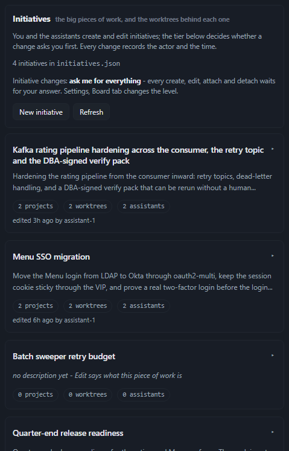
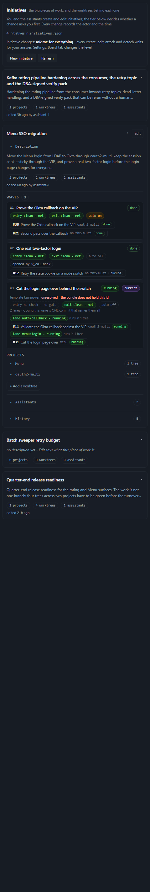
The same wave lane at all three widths
These three crops are the wave section of the Menu SSO card at each width, captured in one run. The 1440 and 1024 crops are identical in size (437x503) because the rail is fixed; the 768 crop is 305x706, so the same content becomes taller by a third. W1, W2 and W3 are present in all three, with their gates, auto state, members and the two lanes in W3.

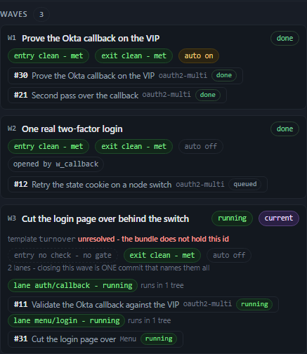
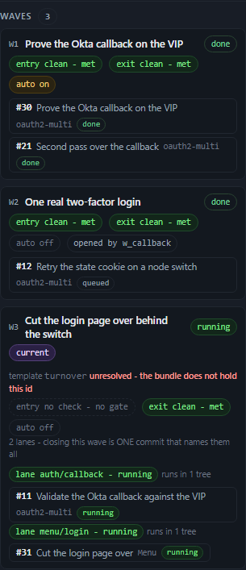
The full open pane at 1024 and 768 is 04-1024-expanded-pane.png and 06-768-expanded-pane.png. The whole page at each width is 00
03 and 05.


The measurements
| Measure | 1440 dock | 1024 dock | 768 dock | 1400 float |
|---|---|---|---|---|
| Assistant rail | 480px | 480px | 348px | 1400px |
| Card width | 463px | 463px | 331px | 1382px |
| Open Menu SSO card height | 967px | 967px | 1188px | 775px (two columns) |
| Pane scroll for four initiatives | 2,845px | 2,845px | 2,735px | 1,472px |
| Title | 13.5px / 600 | 13.5px / 600 | 13.5px / 600 | 15px / 600 |
| Description | 12px / 18.6 | 12px / 18.6 | 12px / 18.6 | 12px / 18.6 |
| Chip | 10.5px / 16 | 10.5px / 16 | 10.5px / 16 | 10.5px / 16 |
| Wave title | 12.5px / 600 | 12.5px / 600 | 12.5px / 600 | 12.5px / 600 |
| Gate chip | 10.5px | 10.5px | 10.5px | 10.5px |
| Chips in the open card | 29 | 29 | 29 | 29 |
| Bordered descendants | 42 | 42 | 42 | 42 |
| Controls, and the smallest | 8, min 28px | 8, min 28px | 8, min 28px | 8, min 28px |
Measured by getBoundingClientRect and getComputedStyle in the page, on the open init_sso card. The 28px control floor is the one the 1.144 readability pass set; this round did not re-audit contrast, focus or hit targets, and the redesign must keep that floor rather than renegotiate it.
The wide float is the only place the width is used, and only halfway
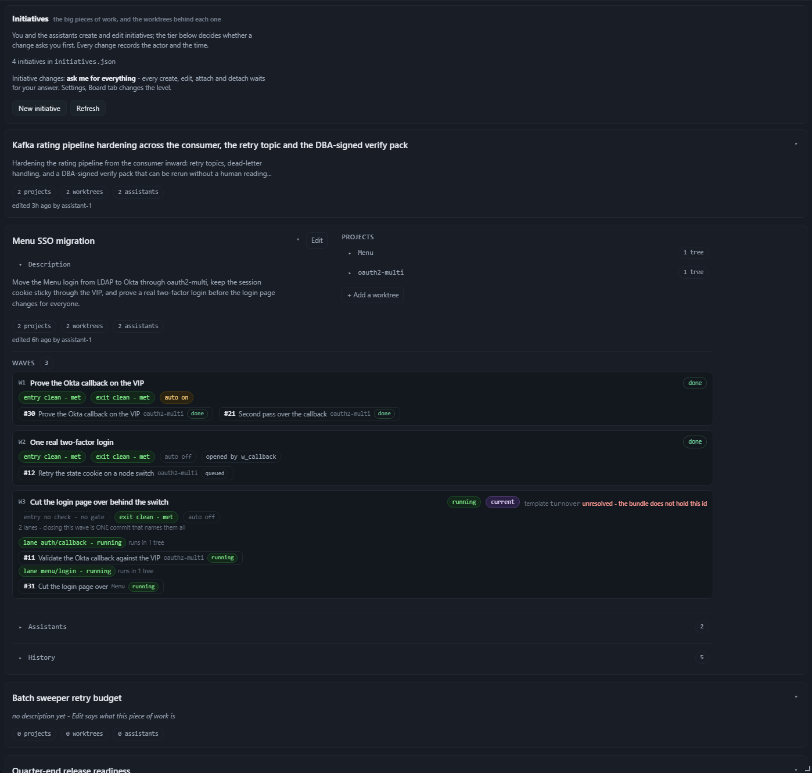
The states a redesign must not lose, in one place
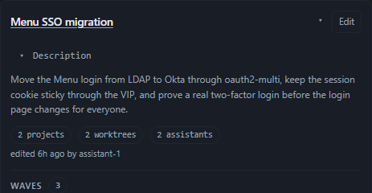
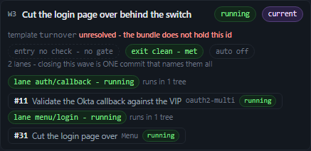
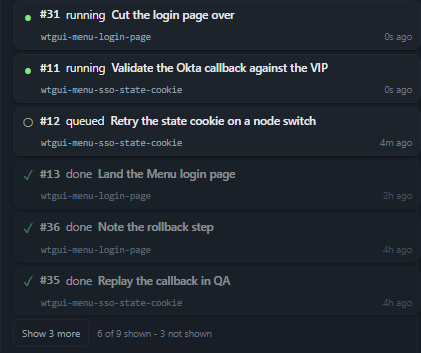
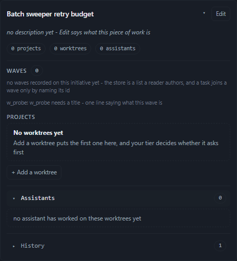
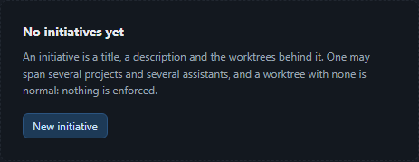
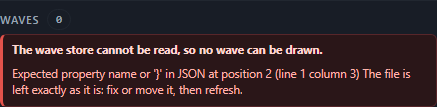
What the current tab does not have
- No sort control. Initiatives are ordered by
updatedAtdescending, projects alphabetically, trees by path, assistants by last work, history newest first. Every order is fixed in the route or the store. - No filter and no search. Every initiative is drawn on every paint. There is no way to ask for "only what is running" or "only what is blocked".
- No collapse all. One open state per initiative, toggled on its own head. With five initiatives that is fine; with twenty it is a scroll.
- No status at rest. A folded card carries counts, not state. The current wave, its running members and the blocked gate exist only inside the open card.
- No cross-initiative signal. The tab cannot answer "what is moving anywhere" without opening every card.
Three independent readings of the same evidence
Three passes were run independently, each given the same captures and a different lens: information architecture, visual craft, and engineering cost. None saw the others' proposals. Their concepts were Register and Spine, Greenline and Initiative Spine. They converged on the diagnosis, which is why all three directions below are built on it; they disagreed on how far to go, which is the real choice.
1. Register and Spine (information architecture)
"Status before prose, at the line. Borders hold things; marks carry state." A register line per initiative with a numeric fingerprint, opening into a page whose waves hang on one rail. At 1300 the register becomes a table with sortable columns. It argues the description should open folded and that 10.5px should be retired from this pane.
"Status before prose, at the line. Borders hold things; marks carry state." A register line per initiative with a numeric fingerprint, opening into a page whose waves hang on one rail. At 1300 the register becomes a table with sortable columns. It argues the description should open folded and that 10.5px should be retired from this pane.
2. Greenline (visual craft)
"The initiative is a route, not a card stack." One 2px line through the waves, stations on it, lanes as branch rails, gates as signal words. Flat ledger headers, a toolbar plus an About fold, a type scale from 11.5 to 22, and a scoped greener palette. It retires the chip form but keeps every chip's content.
"The initiative is a route, not a card stack." One 2px line through the waves, stations on it, lanes as branch rails, gates as signal words. Flat ledger headers, a toolbar plus an About fold, a type scale from 11.5 to 22, and a scoped greener palette. It retires the chip form but keeps every chip's content.
3. Initiative Spine (engineering cost)
"A compact signal index that opens into a dossier, with a cast rail." It recommends a CSS-only de-pill as the first commit and explicitly argues against extracting the card first. At 1300 the dossier splits into a wave main column and a projects/assistants/history rail. It names the test surface and what it would deliberately not build.
"A compact signal index that opens into a dossier, with a cast rail." It recommends a CSS-only de-pill as the first commit and explicitly argues against extracting the card first. At 1300 the dossier splits into a wave main column and a projects/assistants/history rail. It names the test surface and what it would deliberately not build.
Where they agree
- The tab reads its own manual before its work; the three paragraphs and the tier line belong behind one help control, with the words kept.
- A folded initiative must carry its status, not just its counts and a description preview.
- The pills are the problem: state, gate, count, lane and member all wear the same outline, so hierarchy is flat. De-pill first, then restructure.
- The wave sequence wants one leading line or rail, not a nested box per wave.
- The wide panel should spend its width on the waves and the cast, not on a 72ch column above full-width wave slabs.
- Every field, fold, route and the 16-point accessibility floor stay.
Where they disagree
- Extraction. The IA pass splits the card into a line and a page; the engineering pass says do not extract first, because the card is 127 lines wrapped in twenty hooks. The report's own answer, above, sides with the engineering pass: de-pill first, extract only later and only the whole block.
- The wide layout. The IA pass wants a table; the visual pass wants a vertical route with lanes side by side; the engineering pass wants a main column plus a cast rail. Those are three different uses of the same 1,180px.
- How much to hide. The IA pass hides the description at rest and opens it on the page; the visual pass hides the manual behind About; the engineering pass hides non-current waves behind one press. Each buys density with a click, and the three directions price that click differently.
AThe Register
Every initiative becomes one aligned line that says what it is and how far it has got; a press opens a page whose waves hang on a single spine.
Why this direction
The current card is information-inverted. At rest it spends about 150px per initiative on a two-line title and a two-line description, and shows nothing about the thing the tab exists for: which wave is current, what is running, what is blocked. The register line keeps every field but re-weights it: title, one description line, a state fingerprint (W2/3, "1 running", "3h"), and the three counts. The open page then keeps the current order - head, description, counts, waves, projects, assistants, history - so it can be audited against the inventory line by line. This is the lowest-risk way to get most of the modern feel without changing the navigation model.
The sketch
Kafka rating pipeline hardening across the consumer, the retry topic and the DBA-signed verify pack
Hardening the rating pipeline from the consumer inward: retry topics, dead-letter handling, and a DBA-signed verify pack.
Menu SSO migration
Move the Menu login from LDAP to Okta through oauth2-multi, keep the session cookie sticky through the VIP, and prove a real two-factor login before the login page is cut over.
Waves 2 done / 1 running
-
✓
W1
Prove the Okta callback on the VIP
doneentry clean metexit clean metauto on#30Prove the Okta callback on the VIP oauth2-multidone#21Second pass over the callback oauth2-multidone -
✓
W2
One real two-factor login
doneentry clean metexit clean metauto offopened by w_callback#12Retry the state cookie on a node switch oauth2-multiqueued -
●
W3
Cut the login page over behind the switch
runningtemplate turnover unresolvedentry no checkexit clean metauto offlane auth/callback · running · runs in 1 tree#11Validate the Okta callback against the VIP oauth2-multirunninglane menu/login · running · runs in 1 tree#31Cut the login page over Menurunning2 lanes - closing this wave is ONE commit that names them all
Cast projects / assistants / history
ProjectsMenu 1 tree · oauth2-multi 1 tree+ add
Assistantsassistant-1 1q 2r 6d 0p · assistant-2 0q 0r 1d 0p2
Historycreated, attached x2, edited x25
Batch sweeper retry budget
no description yet
Quarter-end release readiness
The DBA-signed rating pack, the turnover rehearsals and the release notes, all before the quarter closes.
Static sketch, real Menu SSO data. Not product code. It shows the folded register, one open page, the spine, lanes, and the cast rows at 480.
At 480 and at 1300
480 (463px card, 331px at the 768 rail): a 44px toolbar, a 28px meta line, then 68 to 96px register lines. The open page replaces the line in its slot. Waves are a 24px gutter with numbered nodes and state words in a fixed right column. Gates are one line of marks and words, not three pills. Members are 26px rows. Projects, assistants and history are compact rows, not boxes.
1300 (float, about 1,180px): the register becomes a table: a two-line initiative cell, then tabular columns for waves, running tasks, people and edited time. The column headers are the sort controls. The open page keeps a 1fr / 360px split: waves and members on the left, projects on the right. The list itself stays one column, so opening a card never reflows the order.
What it would change in files
public/style.css:4834-5007: replace the.init-*block with the register, page, spine and cast rules; keep the 2px focus ring at5000-5007.public/assistant.js:3973-4042: header becomes toolbar plus meta plus an About fold; list paints register lines; sort and filter state added (initSort,initFilter,initQuery), default order unchanged.public/assistant.js:3785-3911:initCardHtmlsplits intoinitLineHtmlandinitPageHtml; same fold keys and the samewtInitiativeFold.pressrule.public/core/initiative-fold.js: add pureinitiativeSignal(init),indexMeta(init)andsortLines/filterLines; existing helpers untouched.public/core/waves-lane.js: same data contract, new spine markup for the node, signals, lane stub and member row; everydata-wave-*attribute kept.test/initiative-fold.test.js,test/waves-lane.test.js,tools/initiatives-measure.mjs: new cases and selectors.- No route, store or server change. The fingerprint is derived from fields the read already returns.
What it keeps
- Every inventory row A1 to H15; the 104-item list is the acceptance test.
- The accordion and one scroller; no new navigation and no selection state.
- All three fold keys and the four-answer press rule.
- Every count, including the zeros, and every state word and its tooltip.
- All four alerts and both store states.
- Every route and every tier question.
- The 28px control floor and the 2px focus ring.
- The 4s repaint, the focus token and the typing guard.
- The description cut and its resize re-measure.
- The compact queue card as the only task renderer.
The trade-off: this is the smallest visual distance of the three. It fixes status at rest and the box soup, but at 1300 it is still one list with a table header, and the open page is still a long scroll. The density comes from folding the description at rest, so reading an initiative's words costs one press. A reader who wanted the tab "completely reinvented" may call this a very good tidy-up.
Theme: what stays, where it stretches
Stays: #0f1115 page, #151a22 card, #262c37 lines, #e6e9ef text, #9aa4b2 dim, #7ee787 running, #6fcf97 done, #7fb2e8 links, #f0c674 blocked.
Stretches: a green-tinted spine (#1c3a2a), a slightly warmer surface on the current row (#17211b), and four elevation steps taken from the existing palette so depth stops coming from 1px borders. No new hue, no new font, no icon pack.
Effort: medium. Risk: low. Best if the reader wants the tab to feel current without changing how he moves through it.
BThe Route
The wave sequence is the page. One green line runs through every initiative; lanes branch from it, and the green stops being a chip accent and becomes the structure.
Why this direction
The data already has a shape: ordered waves, one current position, gates before and after, and lanes that run in parallel and join. The current screen draws that shape as a column of identical rounded boxes, then writes it a second time in 10.5px pills. Drawing it once, as a route, does three things at the same time: it makes sequence readable before any word is read, it removes two of the five border levels, and it gives the wide float a real use, because lanes can sit side by side and members can align as a manifest. This is the direction that most directly answers "far more modern" while keeping every field and the accordion.
The sketch
Kafka rating pipeline hardening across the consumer, the retry topic and the DBA-signed verify pack
Hardening the rating pipeline from the consumer inward: retry topics, dead-letter handling, and a signed verify pack.
2 projects · 2 worktrees · 2 assistants · edited 3h ago
Menu SSO migration
Move the Menu login from LDAP to Okta through oauth2-multi, keep the session cookie sticky through the VIP.
2 projects · 2 worktrees · 2 assistants · edited 6h ago by assistant-1
Menu SSO migration
Move the Menu login from LDAP to Okta through oauth2-multi, keep the session cookie sticky through the VIP, and prove a real two-factor login before the login page is cut over.
Projects
Menu1 tree
oauth2-multi1 tree
+ Add a worktree
W1
Prove the Okta callback on the VIP
doneentry clean metexit clean metauto on
#30 Prove the Okta callback on the VIP
oauth2-multidone
#21 Second pass over the callback
oauth2-multidone
W2
One real two-factor login
doneentry clean metexit clean metauto offopened by w_callback
#12 Retry the state cookie on a node switch
oauth2-multiqueued
W3
Cut the login page over behind the switch
runningtemplate turnover unresolved - the bundle does not hold this id
entry no checkexit clean metauto offcurrent
auth/callback · running
runs in 1 tree
#11 Validate the Okta callback against the VIP
oauth2-multirunning
menu/login · running
runs in 1 tree
#31 Cut the login page over
Menurunning
2 lanes
closing this wave
is ONE commit
that names them all
closing this wave
is ONE commit
that names them all
Assistants 2
assistant-1 · working now · 1 queued · 2 running · 6 done · 0 parked
assistant-2 · worked 1d ago · 0 queued · 0 running · 1 done · 0 parked
History 5
assistant-1 created this · 2d ago
assistant-1 attached menu-sso-state-cookie · 6h ago
Batch sweeper retry budget
no description yet
0 projects · 0 worktrees · 0 assistants · edited 9h ago
Quarter-end release readiness
The DBA-signed rating pack, the turnover rehearsals and the release notes, all before the quarter closes.
2 projects · 2 worktrees · 1 assistant · edited 1d ago
Static sketch, real Menu SSO data. Not product code. At 480 the lanes stack and the project column moves under the description; the sketch shows the 980px form so the route, rails and manifest are visible.
At 480 and at 1300
480: a 48px toolbar, then a 36px meta line. Folded initiatives are flat 76 to 112px ledger rows with a four-dot route glyph, a title, a two-line preview, the counts as text and the edited line. The open initiative is a full-bleed plate: title, description, counts, then a vertical route with 28px station gaps. Each station is title, template, a signal strip, then lanes that stack or members as rows. Projects, assistants and history are disclosure rows under a hairline.
1300: the open plate is 1,180px. The head splits into title and description on the left and a 360px projects column on the right, divided by a hairline. The route runs full width; lanes sit side by side with a 320px minimum and wrap rather than squeeze; members align as a manifest (44px id, flexible title, 150px project, 80px state). Assistants and history run full width beneath the route. The list stays one column, so no card moves when another opens.
What it would change in files
public/style.css:4834-5007: replace the initiatives block with the Greenline system, scoped--init-*tokens, and container queries at 560 and 900; replace the blue focus ring inside this tab only.public/core/waves-lane.js: new markup grammar for the station, signal strip, lane rail, member row and join bracket. The public API and everydata-wave-*attribute stay.public/assistant.js:3973-4042: toolbar, meta line, About fold;3785-3911: plate head and the compact casts;3527-3661: count strip and task footer.public/core/initiative-fold.js: add purerouteGlyph(init)andgateSummary(wave); the press rule, cut, count chips, task window and history line stay.test/waves-lane.test.jsandtest/initiative-fold.test.js: rewrite only the markup-shape assertions; keep every data and state assertion.- No change to
routes/initiatives.js,lib/waves.js,public/queue-cards.js,public/index.htmlor the server.
What it keeps
- Every inventory row A1 to H15, including all four alerts and both store states.
- The accordion and one scroll; no new navigation.
- Every count, state word, gate word and tooltip sentence.
- Every fold, its key and its aria-expanded.
- Every route, tier question and pending-question note.
- The compact queue card and its show-more window.
- The 28px floor, the focus token and the 4s repaint.
- The description cut and re-measure on resize.
- The files and the store schema; no server change.
- The name of every class and data attribute, so fixtures and tests still find them.
The trade-off: it buys a header about half its height, one leading line instead of 42 borders, a current wave visible before reading, and a wide layout that uses its width. It pays with vertical air: 28px station gaps and 32 to 44px member rows make the open card somewhat taller at 480 than the current 8px boxes. It also gives up the card outline as the fold affordance (the 48px row, hover wash and chevron must carry it), moves the explanatory prose one press away, and makes this one tab darker and greener than the rest of the float, which only works if the tokens are scoped.
Theme: what stays, where it stretches
Stays: the panel's dark base and its green/blue/amber/violet state vocabulary. Stretches, scoped to #as-initiatives: field #0A100D, open plate #0E1712, hairline #1E2C24, rail #2B4034, text #E9EFE9, dim #9BAA9E, mint #6FE3A5 for done/running/met, sky #86C2EC for ready and links, amber #E2B366 for blocked and auto-wait, coral #EC8B82 for not met and unresolved, violet #B7A4E6 for cannot tell. No filled chip backgrounds: a 6 to 10% mint tint on the current station, coral tint on errors. This is the biggest stretch of the three, and the only one that changes the tab's base tone rather than just its accents.
Effort: high. Risk: medium. Best if the reader wants the tab to feel genuinely new and is happy for this one surface to be greener than the rest of the panel.
CThe Cockpit
The tab becomes a workspace: an initiative index on the left, a workbench on the right, and a wave track across the top of the workbench.
Why this direction
At 480 there is no room for two panes, so the cockpit is an index that opens a detail with a Back control. At 900 and above it becomes what the wide float already has space for: a persistent index of initiatives, a selected detail, and a horizontal wave track that makes the sequence visible in one glance. Status becomes comparable across initiatives without opening each one, which is the thing the folded list cannot do today. The casts (projects, assistants, history) become segments of the detail rather than three stacked folds, so every field is still one press away but the page stops being a vertical stack of everything. This is the most reinvented direction and the one that would scale to other areas of the panel.
The sketch
Initiatives 4
Search initiatives, projects, tasks
Kafka rating pipeline hardening
no waves
2p · 2w · 2a · 3h
Menu SSO migration
W3 running · 2 of 3 done
2p · 2w · 2a · 6h
Batch sweeper retry budget
no description
0p · 0w · 0a · 9h
Quarter-end release readiness
W2 running · 1 of 2 done
2p · 2w · 1a · 1d
Menu SSO migration
EditMove the Menu login from LDAP to Okta through oauth2-multi, keep the session cookie sticky through the VIP, and prove a real two-factor login before the login page is cut over.
W1Okta callback on the VIPdone
W2One real two-factor logindone
W3Cut the login page overrunning
W3
Cut the login page over behind the switch
running · currententryno check
exitclean met
autooff
templateturnover unresolved
auth/callback running
runs in 1 tree
#11
Validate the Okta callback against the VIP
oauth2-multi · runningmenu/login running
runs in 1 tree
#31
Cut the login page over
Menu · running2 lanes
→
ONE close
→
ONE close
Worktrees 2Assistants 2History 5
Menumenu-login-pagewtgui/menu-login-page
oauth2-multimenu-sso-state-cookiewtgui/menu-sso-state-cookie
+ Add a worktreegrouped picker, tier decidesask
Static sketch, real Menu SSO data. Not product code. The sketch is the 1000px form; below 720 it collapses to the index and the detail becomes a drill-down with a Back control.
At 480 and at 1300
480: the tab opens on the index: four rows of title, status, counts and edited time, around 320 to 380px in total. Pressing a row opens its detail in place, with a 32px Back row; the horizontal wave track scrolls and snaps the current node into view; gates become a four-cell strip; lanes stack as columns; the casts are segments. The selected initiative and the Back position live in module state, so the 4s repaint does not lose them.
1300: a 268px index and a detail that fills the rest. The wave track is always visible at the top of the detail, the current wave opens into the board, and the three casts are segments with the Worktrees table shown by default. The index is searchable and each row carries the current-wave status, so the reader can compare without opening. The track is the only horizontal scroller; the page itself does not scroll sideways.
What it would change in files
public/initiatives.js(new): the whole 995-line block fromassistant.js, moved as a classic script loaded beforeassistant.js, with a context object foras$, state,apiFetch,esc,relTime,setView, the queue painter and the focus token. This direction is big enough to justify the move, unlike A or B.public/index.html: one script tag for the new module. No pane markup change.public/style.css: index, detail, track, board, lane columns and segments; scoped tokens; the focus ring.public/core/waves-lane.js: a compact track node plus the full board mode; keep the fullwaveHtmlfor the current wave.public/core/initiative-fold.js: pureindexSignal(init),selectedAfterFilter,trackSteps(init).routes/initiatives.jsandlib/waves.js: no change; the index status is derived fromwaveCurrentId,wave.state,waveStatusandwaveSkipped.- New browser gate at 480 and 1300 for the index height, the selected-state persistence, the track and the no-horizontal-scroll rule.
What it keeps
- Every inventory row A1 to H15, in the detail or the index.
- Every wave, gate, lane, member, project, tree, assistant, task and history row.
- Every fold's content, now a segment or a disclosure inside the detail.
- Every route, tier question and alert.
- Every count, including zeros, and every tooltip sentence.
- The compact queue card and its window.
- The 28px floor, focus token, typing guard and 4s repaint.
- The store, the server and the schema.
- The board and the other tabs; this is still one tab.
The trade-off: it changes the navigation model, which is the one thing the other two deliberately keep. At 480, comparing two initiatives costs a Back press and a re-open, and the open state of a card is no longer visible while another is being read. At 1300 it is the best of the three at a glance, but it needs a selected initiative, a filtered-index fallback and careful keyboard and aria work; it is the largest diff and the largest test surface. It also takes the most risk with "keep the structure": all the content is kept, but the accordion becomes a master-detail.
Theme: what stays, where it stretches
Stays: the dark base, the green running/done words, blue links, amber blocked, violet unknown. Stretches: three surfaces for index, detail and selected row (#0d1117, #0f141b, #151d27), a green 2px selection rail, a green progress track with a halo on the current node, and a single amber join cell. The green is used for position and progress, not for decoration; the rest of the panel does not change.
Effort: very high. Risk: high. Best if the reader wants the Initiatives tab to become the panel's workspace pattern and intends to expand the same language to other tabs.
How the three compare
| Question | A: The Register | B: The Route | C: The Cockpit |
|---|---|---|---|
| Status at rest | Yes: W2/3, state word, counts as text | Yes: route glyph, current station, status word | Yes: index row status, selected track |
| Sequence legibility | Good: vertical spine | Best: one continuous route | Best at 1300: horizontal track |
| Lanes | Indented stubs under the wave | Branch rails, side by side at 1300 | Columns with a merge cell |
| Wide panel | Table header, one list | Plate split, waves full width, lanes side by side | Index plus workbench, best use of width |
| Structure kept | Fully: accordion, one scroller | Fully: accordion, one scroller | Content kept; navigation changes |
| New state | Sort and filter only | About fold only | Selected initiative, Back, segment |
| First commit | CSS de-pill | CSS de-pill | CSS de-pill, then extraction |
| Files touched | CSS, assistant.js, 2 core, tests | CSS, assistant.js, 2 core, tests | New module, index.html, CSS, 2 core, tests |
| Risk of losing a field | Low | Low to medium (markup rewrite) | Medium (move plus nav) |
| Effort | Medium | High | Very high |
| Best if | He wants a modern tidy-up with the least risk | He wants the tab to feel new without a new navigation model | He wants a workspace and may expand the language |
Recommendation
My order is B, then A, then C. B (The Route) is the direction that answers the request most directly: it makes the wave sequence the page, it turns the green theme into structure, it fixes the wide float, and it keeps the accordion and every field. A is the safe fallback if the reader wants the smallest change; C is the ambition if he wants the Initiatives tab to become the panel's workspace pattern. All three share the same first commit, so choosing B does not throw away A's work: the de-pill, the header compression and the register line are the first three steps of either.
The first three commits, whichever direction is chosen
- CSS-only de-pill. Inside
#as-initiatives, make.chip,.wave-gate,.wave-state,.wave-current,.wave-auto,.wave-mstateand the member chips borderless text tokens. Keep one card edge and every control border. No markup, no handler, no server. Measure: bordered descendants in the open card should fall from 42 to about 12; filled pills from 29 to 0; the 16-point readability floor must stay green. - Header compression. Replace the 204px preamble with a 48px toolbar and a 36px meta line. Move the three explanatory paragraphs and the tier hint behind one About control, word for word; keep the store count visible. Measure: distance from the pane top to the first initiative title, 204px to about 90px.
- Register line with status. One line per initiative carrying the current wave, its state, one running count and the edited time, in tabular numerals. Keep the description preview to one line at rest. Measure: four folded initiatives, 660px to about 300px, and a status readable without opening.
Then the direction-specific work: A builds the page and the spine; B builds the route and the rails; C builds the index and the track. Only C should extract the block first, and only as its own no-op commit.
How the result will be checked
- A field-parity test, not a promise. A fixture that holds met, not met, cannot tell and no gate; auto on and off; opened and waiting; two lanes; a skipped record; an unreadable wave store; a missing tree; zero assistants; no description. Every one of the 104 inventory items must appear in the DOM, at the right fold, before the direction is called done.
- Pure tests for the new helpers in
initiative-fold.jsand the new markup contract inwaves-lane.js. The press rule, cut, count chips, task window and history line keep their existing tests. - One browser gate at 480 and 1300, using
tools/initiatives-fixture.mjs: folded-list height, open-card height, pane scroll, border and chip counts, no horizontal scroll, and the 16-point floor. - Captures at the same three widths, from the same fixture, so the before and after are comparable without a second harness.
Deliberately not built in any direction
- No server change, no new store, no wave write path. The wave lane stays read-only in this slice.
- No new fields: no health score, priority, owner, dates or client-invented progress. Status comes only from the read.
- No filter that hides work by default. If a filter is added, "all" is the default and the counts stay visible.
- No hover-only Remove and no colour-only state: every mark keeps its word.
- No smaller type, no smaller hit targets, no light theme, no icon pack, no framework, no build step.
- No virtualization while the list is this short; it would hide fields before it saves anything.
Appendix
The fixture, as run
The committed fixture was extended in scratch with waves and task links. This is the waves document the captures used, verbatim in substance. It holds the shapes the report needs: a done wave with two done members, a done wave with a queued member, a running wave with two lanes and two running members, a wave with no members, and two refused records.
{
"byInitiative": {
"init_sso": [
{ "id": "w_callback", "position": 1, "title": "Prove the Okta callback on the VIP",
"entryGate": { "check": "clean" }, "exitGate": { "check": "clean" }, "auto": true },
{ "id": "w_login", "position": 2, "title": "One real two-factor login",
"entryGate": { "check": "clean" }, "exitGate": { "check": "clean" }, "auto": false },
{ "id": "w_cutover", "position": 3, "title": "Cut the login page over behind the switch",
"entryGate": null, "exitGate": { "check": "clean" }, "template": "turnover", "auto": false }
],
"init_release": [
{ "id": "w_land", "position": 1, "title": "Land the release notes", "exitGate": { "check": "commits", "min": 1 } },
{ "id": "w_empty", "position": 2, "title": "The clean install on DEV", "exitGate": { "check": "clean" } },
{ "id": "w_bad", "position": 2, "title": "" }
],
"init_sweeper": [
{ "id": "w_probe", "position": 1, "title": "" }
]
}
}
The task side: the fixture's #11 was given waveId: "w_cutover" and lane auth/callback; #12 was given w_login; #21 and #30 were given w_callback; #31 was added as a running member of w_cutover in lane menu/login. Four more done tasks on the same trees were added so the task fold would draw its six-card window and its "Show 3 more" line. Nothing in the repository was changed.
Capture manifest
| Group | Files | What they prove |
|---|---|---|
| Widths | 00 to 09, 49 to 51 | The tab at 1440, 1024 and 768, default and open; the wave lane at each width; the 768 release card. |
| Wide float | 10-1440-float-pane.png | The only two-column layout, at 1400px, with the wave lane full width below it. |
| Card and forms | 20 to 25, 39 | Tab head, card head, folded and open description, edit form, new form. |
| Waves | 26 to 28, 37, 38 | A flat wave, an auto-opened wave, the two-lane wave, skipped records, a wave with no members. |
| Worktrees and assistants | 29 to 34 | Projects, tree rows, add form, assistant counts, task fold, history. |
| Empty and error | 35, 36, 44 to 48 | Every empty state, no-wave card, empty tab, unreadable store, unreadable waves, cold read. |
| Interaction | 40 to 43 | Hover on project, Remove and title; keyboard focus on Remove. |
All files are under docs/assets/initiatives-redesign/a/. Forty-three PNGs, 1.9 MB. The inventory links each one directly.
What is not claimed
- This is not a usability test with people. It is a measured reading of the rendered tab plus three independent design passes.
- It is one fixture, not the reader's fleet. It holds the shapes that matter (waves, lanes, members, empty and error states), but a fleet with twenty initiatives or a wave with ten lanes may expose something this one does not.
- The 1.144 readability floor is cited, not re-audited. This round changed no product code, so contrast, hit targets and focus were not re-measured; the redesign must keep that floor rather than beat it by accident.
- The sketches are static HTML with real data. They are not interactive, they do not run the product's JavaScript, and their colours are proposals, not shipped tokens.
- No product file, route, store, setting or live panel was written. The only writes are this report and the captures under
docs/assets/initiatives-redesign/a/.
What was run
npm run test:changed -- --list named no test: the only changed path is docs/assets/initiatives-redesign/, and no test names or imports it. No product test suite was run, because the diff is documentation and images only. The capture harness itself was run four times against private panels, each waiting for four initiatives before it took a shot. The live listener on 7331 was read, never written.
Report written 2026-11-22 for the landing branch wtgui/research-round-a-for-initiatives-tab-e85acb. Captures and inventory are the evidence; the three directions are the choice.